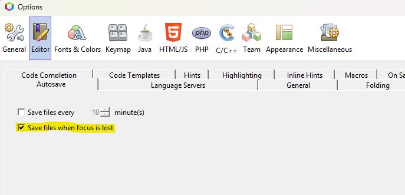

| CFGS DESARROLLO DE APLICACIONES WEB |
|---|
|
| DESPLIEGUE DE APLCIACIONES WEB |
| CYBERSEGURIDAD |
| DAWES Tema 2. INSTALACIÓN, CONFIGURACIÓN Y DOCUMENTACIÓN DE ENTORNO DE DESARROLLO Y DEL ENTORNO DE EXPLOTACIÓN |
Este documento es una guía detallada del proceso de instalación y configuración de un servidor de aplicaciones en Ubuntu Server utilizando Apache, con soporte PHP y MySQL
Descargar Sistema Operativo:
Nombre de la máquina: xxx-used
Memoria RAM: 2G
Particiones: 150G(/) y resto (/var)
Configuración de red interface: xxxx
Dirección IP :10.199.8.195/22 GW: xx.xx.xx.xx/22
DNS: 10.151.123.21
hostname
sudo nano /etc/hosts
sudo nano /etc/netplan/-
# This is the network config written by 'subiquity'
network:
ethernets:
enp0s3:
addresses:
- 10.199.8.195/22
nameservers:
addresses:
- 10.151.123.21
- 10.151.126.21
search: [dominio]
routes:
- to: default
via: 10.199.8.1
version: 2
sudo netplan apply
sudo apt update
sudo apt upgrade
sudo timedatectl set-timezone Europe/Madrid
Link con tutorial: Establecer fecha, hora y zona horaria
sudo adduser miadmin2
Agregarlo al grupo sudo
sudo usermod -aG sudo miadmin2
sudo ufw enable
Comprobación del estado del cortafuegos
sudo ufw status
Abrimos el puerto 22
sudo ufw allow 22
sudo ufw status numbered
sudo ufw delete (numero de regla)
sudo systemctl status shh
sudo systemctl enable ssh
ssh nombreUsuarioMaquina@IPmaquina
sudo apt update
sudo apt install apache2
sudo ufw allow 80
sudo apt install apache2
http://ipMaquina
sudo systemctl status apache2
sudo useradd -M -d /var/www/html -N -g www-data -s /bin/bash operadorweb
sudo passwd operadorweb xxx
sudo chown -R operadorweb www-data /var/www/html
sudo chmod -R 775 /var/www/html
En este apartado vamos a ver la forma de instalar el servicio de php en nuestro Ubuntu Server con Apache instalado.
sudo apt update
sudo apt install software-properties-common -y
sudo add-apt-repository ppa:ondrej/php -y
ls /etc/apt/sources.list.d/ | grep ondrej
sudo apt update
sudo apt install libapache2-mod-php8.3 php8.3-fpm -y
sudo a2enmod proxy_fcgi
sudo a2dismod php8.3
sudo a2dismod mpm_prefork
sudo a2enmod mpm_event proxy_fcgi
sudo a2enconf php8.3-fpm
sudo systemctl restart apache2
/var/www/html/

El archivo llevara las siguiente lineas de código php:
<?php
phpinfo();
?>
http://ipServidor/info.php
Veremos la información de nuestro servicio Php

cd /etc/php/8.3/fpm
sudo cp php.ini php.ini.backup
sudo nano php.ini

display_errors=On
display_startup_errors=On

Cambiamos de 128M a 256M.
sudo sytemctl restart php8.3-fpm
Versión Netbeans: Apache NetBeans 20
Enlace de descarga: https://netbeans.apache.org/front/main/download/nb20/
CREACIÓN:
Lo primero que tendremos que hacer es crear una carpeta en nuestro almacenamiento local con el nombre del proyecto:
D:\ProyectosNB\ProyectoPrueba

Lo segundo sera crear la carpeta dentro del programa MobaXterm_portable, lo haremos en el siguiente directorio:
/var/www/html

Seguidamente crearemos un archivo .php dentro del directorio creado anteriormente:

El tercer paso es crear un nuevo proyecto PHP en Netbeans:
- PHP Application from Remote Server:

- Name and Location:

Project Name: Mismo nombre que los directorios creados (ProyectoPrueba)
Sources Folder: Directorio en local a la carpeta creada (D:\ProyectoNB\ProyectoPrueba)
- Remote Connection:

Project URL: Url donde se alojara nuestro proyecto (http://ip)
Remote Connection: Nombre de nuestra maquina virtual (ahf-used)
Upload Directory Donde se va actualizar los cambios (/ProyectoPrueba)
- Warning:

Nos saldra el siguiente warnign pero le daremos a continuar
Confirmation:

Con este recuadro de confimación ya tendremos nuestro proyecto creado y listo para trabajar.
MODIFICACIÓN:
Para modificar nuestro proyecto vamos a activar la opción de actualización , lo cual nos permitira a la hora de guardar que los cambios se actualicen directamente en el servidor.
Para ello dentro de Netbeans pincharemos en Tools - options:

Activaremos la opción de guardar cuando se cambie el foco:

De esta manera cada vez que hagamos cambios se autoguardara y se actualizara en el servidor directamente.
BORRADO DE PROYECTOS
A la hora de borrar proyectos primero lo realizaremos desde Netbeans.
En la parte izquierda de nuestro Netbeans , donde se encuentran nuestros proyectos abiertos , haremos click en el proyecto que queremos eliminar, en nuestro caso ProyectoPrueba.

Marcaremos la opción de borrado de todos los archivos del proyecto.

Comprobamos si el proyecto también se ha borrado en local.

El ultimo paso es el borrado del proyecto en el MobaXterm.
Alejandro De la Huerga Fernández
Curso: 2025/2026
2º Curso CFGS Desarrollo de Aplicaciones Web